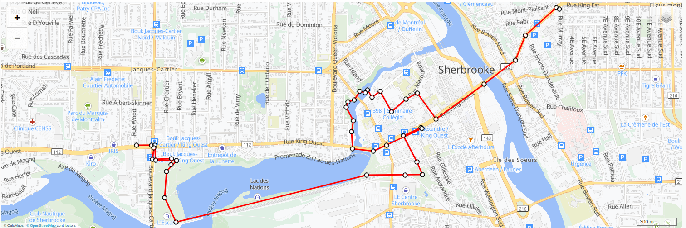
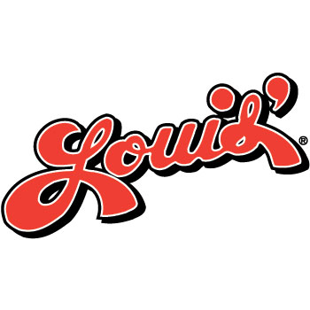

Libérez-vous de toutes souffrances... La souffances est dans l'estomac....
Envoyez 5$ à plasticpack@hotmail.ca via interac pour réserver votre place!!!
Mot de passe: louis
Avoir une expérience virtuelle pour l'attente interminable

Libérez-vous de toutes souffrances... La souffances est dans l'estomac....
Envoyez 5$ à plasticpack@hotmail.ca via interac pour réserver votre place!!!
Mot de passe: louis
Le Pèrelouisnage est une longue marche où, le 4 juillet 2026, l'on déjeune, dine et soupe dans chacun des Trois Louis de Sherbrooke. C'est une marche qui va d'ouest en est (Le contraire du lever du soleil) et qui passe par les Trois Louis sacrés. Il suffit de se présenter au parc Jacques-Cartier à 9h30 (voir l'horaire) et d'avoir prit connaissance des 10 Commandements (Voir les 10 Commandements).
Il nous fera un plaisir de vous y voir, si vous avez des questions, regardez la Foire-aux-Question ou contactez-moi par courriel!

Vous aurez la chance d'être accompagné par un mangeur de Louis professionnel, le faire tout seul est possible, mais moins sécuritaire
Vos désirs, péché, fantasme et regret sont tous à l'intérieur de vous, comme les frites du Louis
Les pratiques moins anciennes sont souvent stigmatisées. Sortons pour crédibiliser le mouvement
Auto-explanatoire